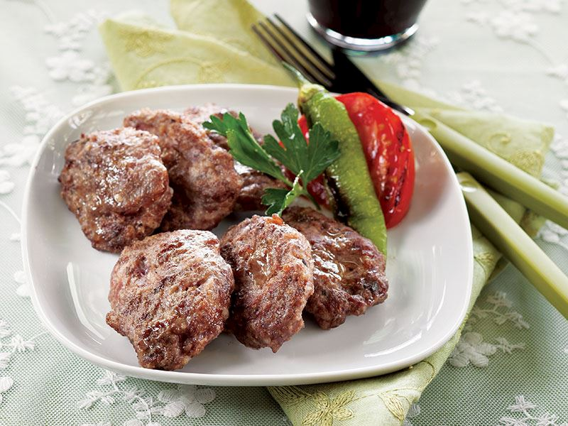
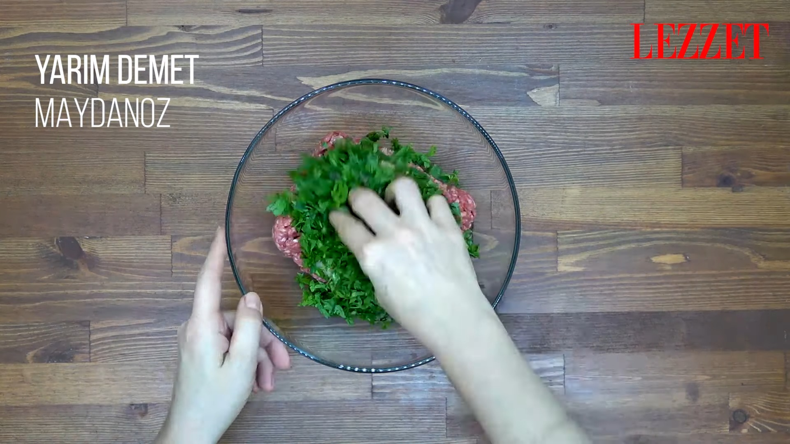
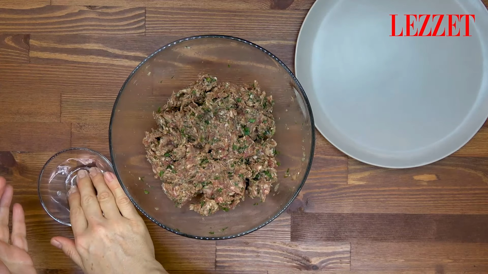
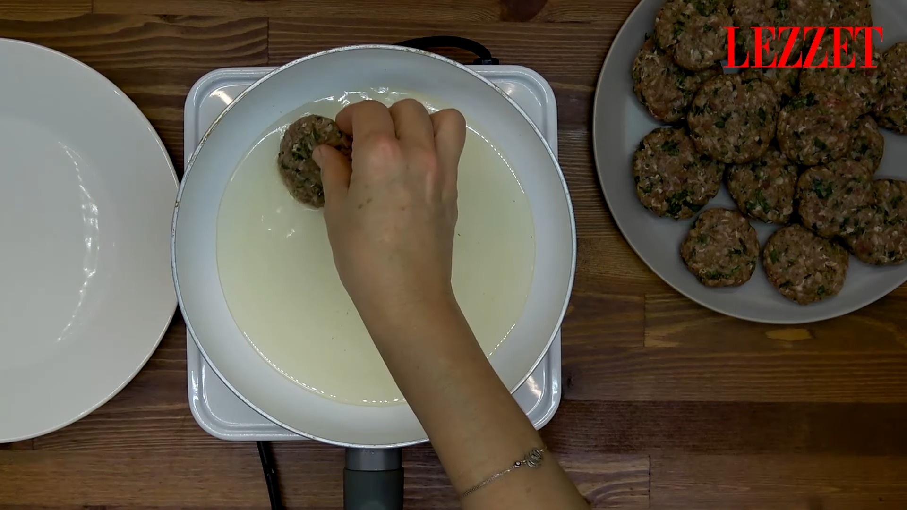
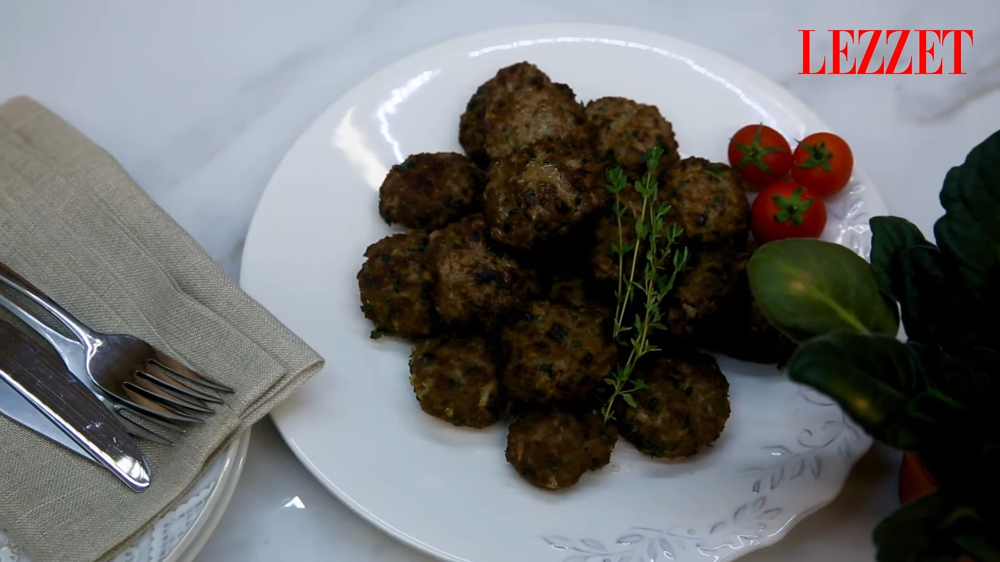

Klasik Köfte
yamek olsun!
Türk mutfağında önemli bir yere sahip olan köftenin yaklaşık 290 çeşidi vardır. Temel malzemesi kıyma olan köfte; ızgara, fırın ve kızartma gibi birçok teknikle hazırlanabilir. İçerisinde kırmızı et barındıran klasik köfte, kas gelişimini destekler ve vücuda enerji verir, ayrıca çok da lezzetlidir.
Hazırlanma süresi: 15dk
pişirme süresi: 10dk
kaç kişilik: 6 kişilik
pişirme süresi: 10dk
kaç kişilik: 6 kişilik
malzemeler
- 1 soğan
- Yarım demet maydanoz
- 500 gr dana kıyma
- 1 yumurta
- 1 çay kaşığı zeytinyağı
- 1 çay kaşığı kimyon
- 1 çay kaşığı karabiber
- 1.5 yemek kaşığı galeta unu
NASIL YAPILIR?
- Bir kapta zeytinyağı, sarımsak, kekik, toz kırmızı biber, karabiber, tuz, ince kıyılmış dereotu ve limon suyunu ekleyerek karıştıralım.
- Dilimlenmiş somonların her tarafını hazırladığımız sosa bulayalım. 
- Kalan sosa çeri domatesleri ve arpacık soğanları alarak karıştıralım. 
- Pişirme kağıdı yerleştirilmiş airfryer haznesine sosladığımız somonları alalım.
- Üzerine arpacık soğan ve çeri domatesleri, defne yapraklarını ve biberiyeleri ekleyerek 200°C de 12 dakika pişmeye bırakalım. 
- Sürenin sonunda pişen somon balıklarımız servise hazır. 